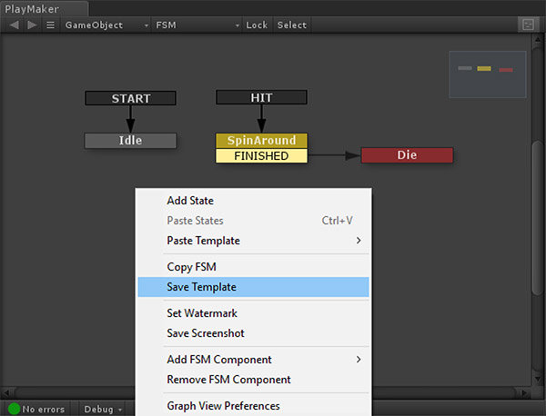
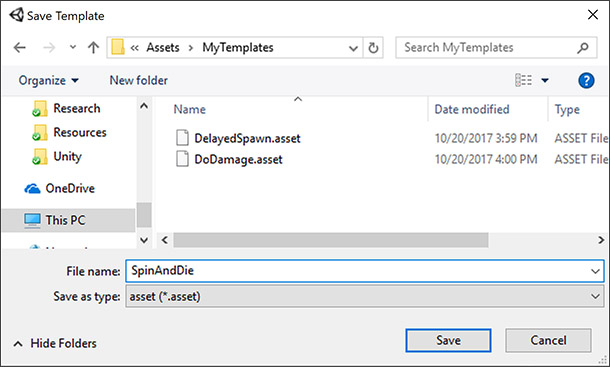
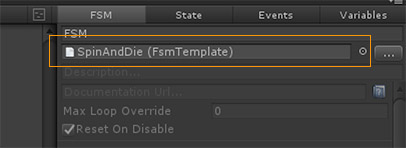
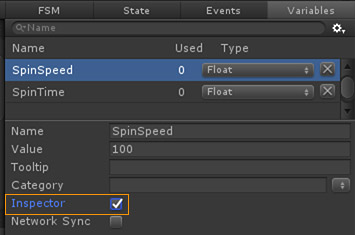
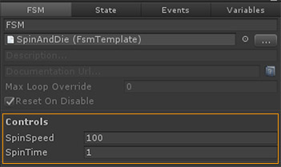

Templates are a very powerful feature of Playmaker. Any FSM can be saved as a Template that can then be re-used.

Templates also let you nest FSMs, so you can build reusable blocks that can be run wherever you need them.
Saving Templates
There are a few ways to save Templates in the Graph View:
- Right click the canvas and select Save Template. This saves the whole FSM as a Template.
- Select some States, right click and select Save Template. This saves the selected States as a Template.
Either way, you'll get a Save Dialog where you can name and save the file:

NOTE: Templates must be saved in the Project's Assets folder!
You can find all Templates in your project using the Template Browser.
TIP: Saved Templates can be organized by Categories.
There are a couple of different ways to use saved Templates:
Referencing Templates
"Referencing" essentially means "run this saved FSM."
You can reference a Template in the FSM Inspector, PlayMakerFSM Inspector, or a Run FSM action.

Any changes to the Template are propagated wherever it's referenced. This allows you to have many GameObjects run the same FSM. Update the Template and all GameObjects running that Template are updated!
This is great for reusable components. E.g., Button behaviours, enemy AI, collision reactions etc.
Pasting Templates
If you paste a Template it inserts a copy into the FSM. All events and variables used in the Template are added to the target FSM.
The copy is no longer connected to the original Template. In other words, changes to the original Template are NOT reflected in the pasted copies.
Over time you can build a library of "snippets" or building blocks that you can quickly paste into FSMs.
Exposing Template Controls
To control the behaviour of a specific instance of a Template, you can expose any of its variables.
Select the variables you want to expose in the Variables Manager and check Inspector:

The exposed variables will now show up in a Controls section:

TIP: These controls are also shown in the PlayMakerFSM Inspector.
This approach lets you "black box" the detailed structure of the FSM and just worry about exposed parameters when setting up or tweaking gameplay.
Working With Scene Objects
NOTE: Since Templates are assets, like Prefabs, they cannot store references to Scene Objects.
If you try to save an FSM with Scene Object references to a Template you will get a warning that those Scene Object references will be lost.
There are 2 main strategies to work around this:
1. Expose Variables with Inspector Flag
Instead of referencing a Scene Object directly in an action, use a Variable and check its Inspector flag. See above.
You can now reference Scene Objects using that exposed variable in Controls.
2. Find Scene Objects at Runtime
Alternatively you can use Find actions to dynamically find and store Scene Objects at runtime.
For example, you can use Find Game Object to find a GameObject with the Player tag.
NOTE: Both these strategies are also applicable to Prefabs, which also cannot store references to Scene Objects.